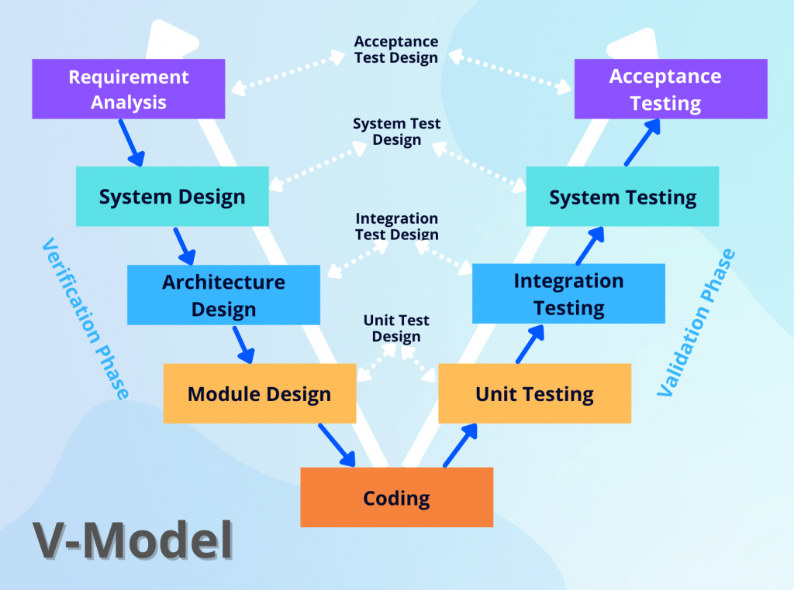

Modelo en V

Este modelo también es lineal, pero se enfoca en la verificación y validación en cada etapa. Las etapas incluyen la definición de requisitos, diseño de sistemas, diseño de integración, diseño de unidades, implementación, pruebas de unidades, pruebas de integración, pruebas de sistema y pruebas de aceptación. Este modelo asegura una mayor calidad a través de pruebas rigurosas, pero también puede ser menos flexible en términos de cambios en los requisitos.